| theoretical | observed | |
|---|---|---|
| P(IQ <= 10) | 0.188 | 0.187 |
| P(IQ >= 15) | 0.063 | 0.077 |
| 90% quantile | 14.485 | 14.500 |
Dormann (2020), Environmental Data Analysis — Chapter 3 (3.1, 3.2, 3.4)
2026-09-03
At the end of this chapter you should…
Note
Chapter 3 is almost entirely theoretical: no data are needed to draw a distribution. Only at the very end do we hold a distribution against real data — using nlschools and geyser from the MASS package.
Chapter 1 ended with the empirical density of a sample. Chapter 3 asks: is there a theoretical curve that could have generated it?
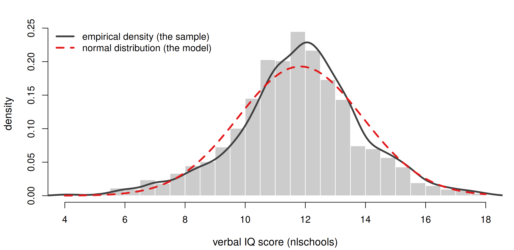
The overlap is good — so it is plausible that these scores are random realisations of a normal distribution.
| Frequency distribution | Probability distribution | |
|---|---|---|
| where it lives | the real world | the theoretical world |
| comes from | measured data | a mathematical function |
| examples | histogram, empirical density | normal, Poisson, gamma |
| how many? | one per data set | an inexhaustible number |
A distribution is a human construct — an invention we hope will help us inspect and analyse data. Parametric statistics assumes such a distribution; the assumption is convenient, but must be justified in every single case.
Distributions come from different places: some were distilled from typical frequency distributions (log-normal), some are pure theory (t), some describe data (binomial), and some exist only to underpin tests (F).
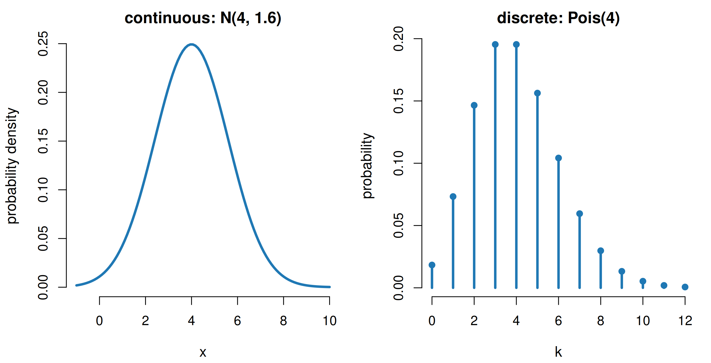
Left: a smooth curve, area = 1, the y-axis is a density. Right: isolated spikes, heights sum to 1, the y-axis is a genuine probability. In between the integers the function is simply not defined.
The Central Limit Theorem: add up enough independent realisations of any distribution and the sum looks normal.
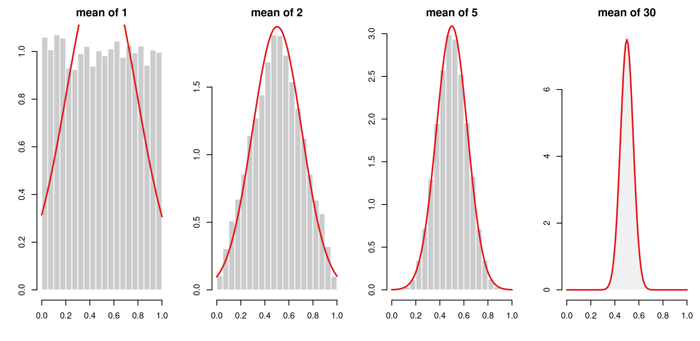
Starting from a perfectly flat uniform distribution, the average of just five draws is already close to a bell shape.
Gelman & Hill put it intuitively: data are normally distributed when many independent factors contribute and none dominates — ash tree girth is weather, pests, soil, nutrients and chance combined. But “enough” is vague, and the conditions are often not met: hence all the other distributions.
A distribution function is written as a conditional statement:
the probability (density) of observing x, given the parameter values.
| distribution | parameters | what they control |
|---|---|---|
| normal | \(\mu\), \(\sigma\) | position, width |
| Poisson | \(\lambda\) | position and width at once |
| binomial | n, p | number of trials, success probability |
| gamma | shape k, scale \(\theta\) | form, stretch |
| uniform | a, b | lower and upper limit |
Choosing parameter values is choosing one specific curve out of a whole family. Let us watch that happen.
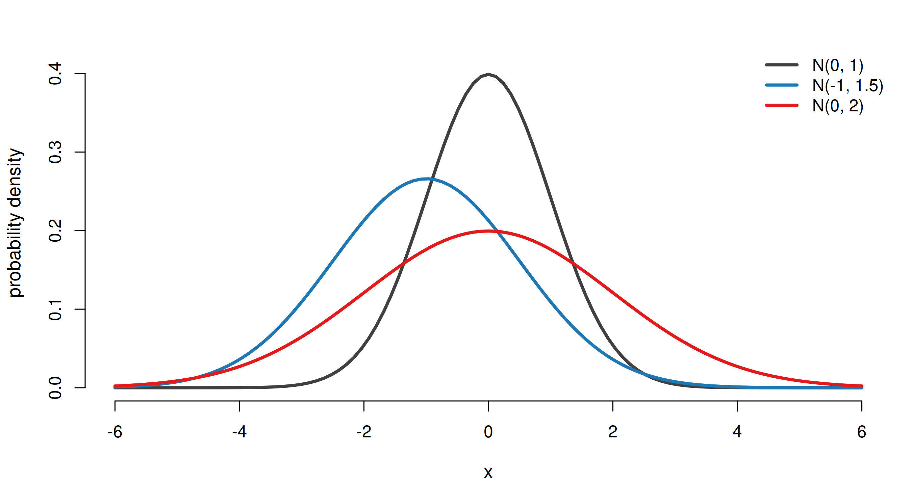
\(\mu\) slides the peak left or right; \(\sigma\) makes the curve wider and therefore flatter. All three curves enclose exactly the same area: 1. Domain \((-\infty, \infty)\), mean \(\mu\), variance \(\sigma^2\) — and the squared distance to \(\mu\) in its formula is why so many methods minimise squares.
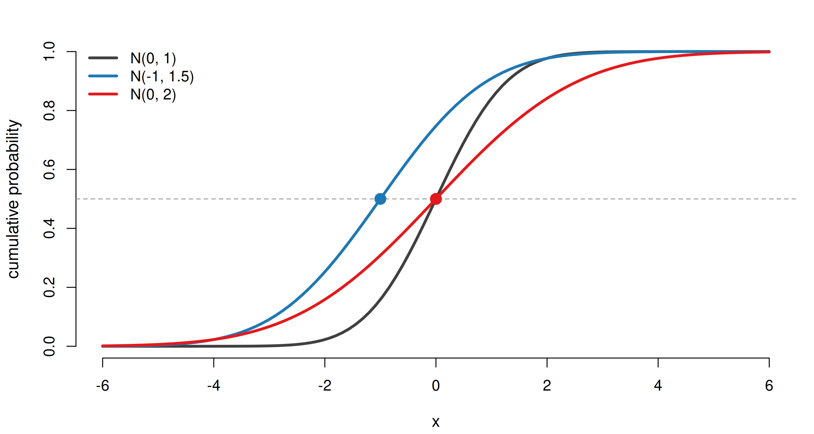
Every curve rises from 0 to 1 and passes through 0.5 exactly at its own mean — half of the probability lies to the left of \(\mu\). A larger \(\sigma\) makes the S-curve rise more gently.
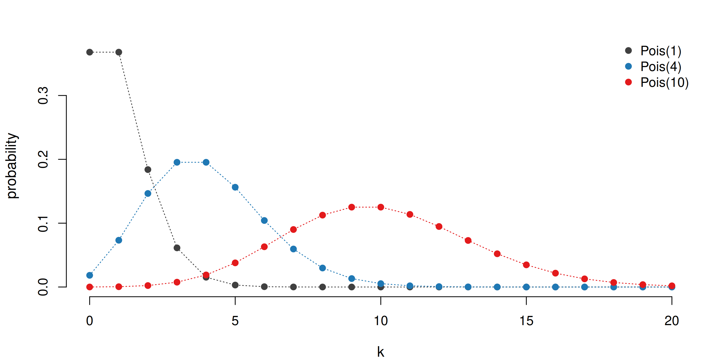
One parameter moves the distribution to the right and flattens it — for the Poisson the mean and the variance both equal \(\lambda\). At \(\lambda = 10\) the shape is already almost normal (the CLT again).
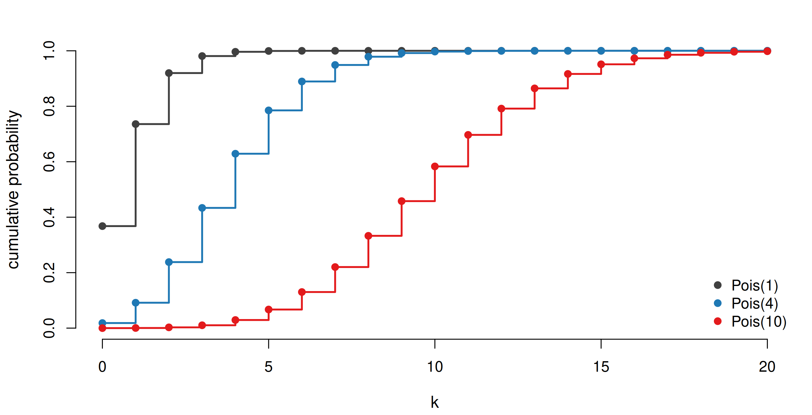
For a discrete distribution the cumulative function is a staircase: it jumps by P(X = k) at every integer and is flat in between.
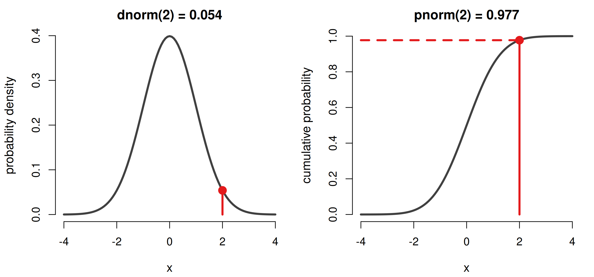
For a continuous distribution P(X = 2) = 0 — a single point has no width, so no area. dnorm(2) is only the height of the curve; it can even exceed 1. pnorm(2) is a probability: 97.7% of all values are ≤ 2, so a measurement of 2 is unusual — only 2.3% lie above it.
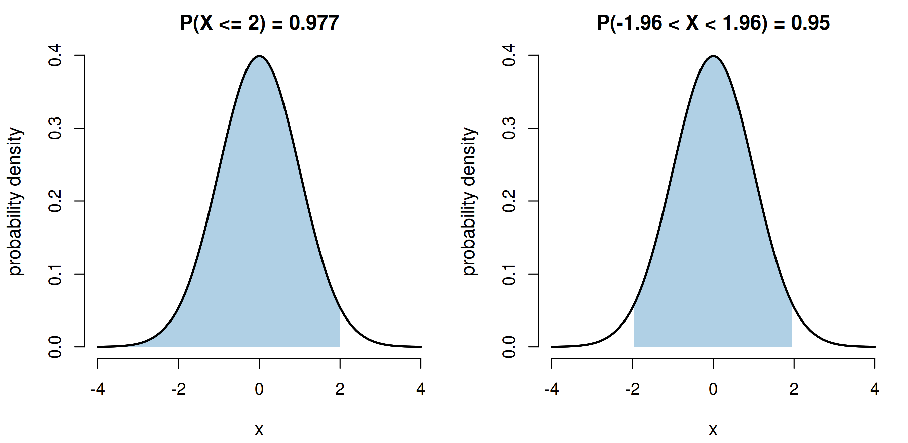
Left: the shaded area equals pnorm(2). Right: the classic 95% interval, pnorm(1.96) - pnorm(-1.96). integrate(dnorm, -Inf, 2) gives the same number the hard way.
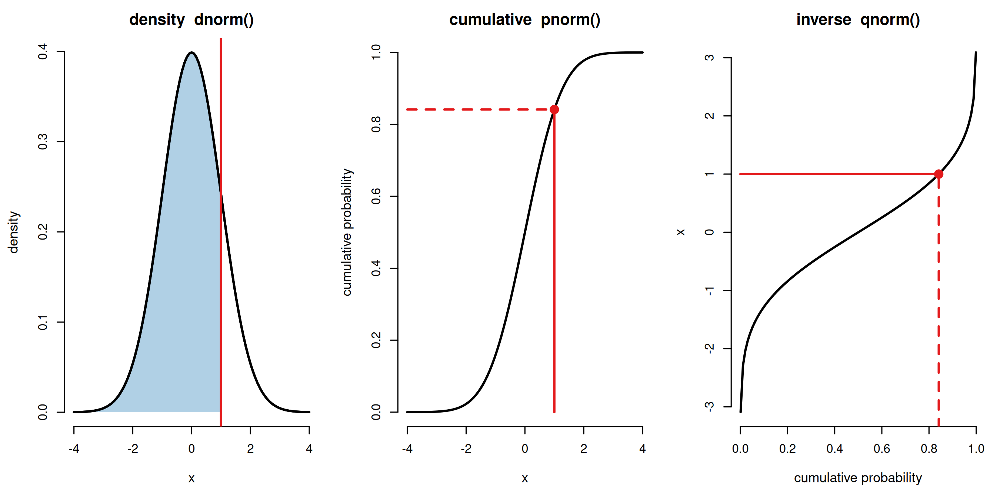
Left → middle: the shaded area (0.841) is the height of the cumulative curve at x = 1. Middle → right: the inverse is the same curve with the axes swapped — mirrored in the diagonal. Give it a probability, get back an x. pnorm(1.64) = 0.95 and qnorm(0.95) = 1.64: the two undo each other exactly. That is why q...() is called the quantile function or inverse cdf — qnorm(0.5) is the median, qnorm(c(0.025, 0.975)) the familiar ±1.96.
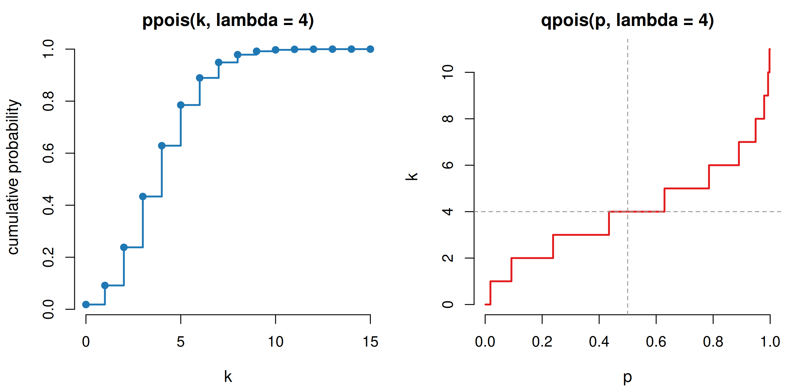
A Poisson variable can only take whole numbers, so the quantile function can only return whole numbers. qpois(0.5, lambda = 4) = 4: the smallest count k for which at least half the probability has accumulated — the median.
| function | prefix | what it returns |
|---|---|---|
dnorm(x, ...) |
d = density | height of the curve at x (pdf, or pmf if discrete) |
pnorm(q, ...) |
p = probability | \(P(X \le q)\) — the area up to q |
qnorm(p, ...) |
q = quantile | the inverse of pnorm() |
rnorm(n, ...) |
r = random | n random draws |
The very same pattern holds for dbinom/pbinom/qbinom/rbinom, dpois/…, dunif/…, dlnorm/…, dgamma/… .
Tip
Learn the prefix once and you know every distribution in R. ?Distributions lists them all; lower.tail = FALSE flips p...() to \(P(X > q)\) without ever typing 1 -.
Continuous
| name | R function |
|---|---|
| \(\beta\) (beta) | dbeta |
| Cauchy | dcauchy |
| \(\chi^2\) (chi-square) | dchisq |
| exponential | dexp |
| F | df |
| \(\gamma\) (gamma) | dgamma |
| log-normal | dlnorm |
| logistic | dlogis |
| normal | dnorm |
| Student’s t | dt |
| uniform | dunif |
| Weibull | dweibull |
Discrete
| name | R function |
|---|---|
| binomial | dbinom |
| geometric | dgeom |
| hypergeometric | dhyper |
| multinomial | dmultinom |
| negative binomial | dnbinom |
| Poisson | dpois |
Beyond stats
dmvnorm (mvtnorm), dwish (MCMCpack), dmixedvm (CircStats), plus dozens in VGAM.
Dormann, Table 4.1 — “no other software offers so many different distributions”.
The Gamma Distribution
Description:
Density, distribution function, quantile function and random
generation for the Gamma distribution with parameters 'shape' and
'scale'.
Usage:
dgamma(x, shape, rate = 1, scale = 1/rate, log = FALSE)
pgamma(q, shape, rate = 1, scale = 1/rate, lower.tail = TRUE,
log.p = FALSE)
qgamma(p, shape, rate = 1, scale = 1/rate, lower.tail = TRUE,
log.p = FALSE)
rgamma(n, shape, rate = 1, scale = 1/rate)
Arguments:
x, q: vector of quantiles.
p: vector of probabilities.
n: number of observations. If 'length(n) > 1', the length is
taken to be the number required.
rate: an alternative way to specify the scale.
shape, scale: shape and scale parameters. Must be positive, 'scale'
strictly.One page per family documents d, p, q and r together, and the argument names are the parameters. Defaults matter: dcauchy(x) silently means location = 0, scale = 1, while dpois has no default for lambda. Careful — ?gamma is the \(\Gamma\) function; you want ?dgamma.
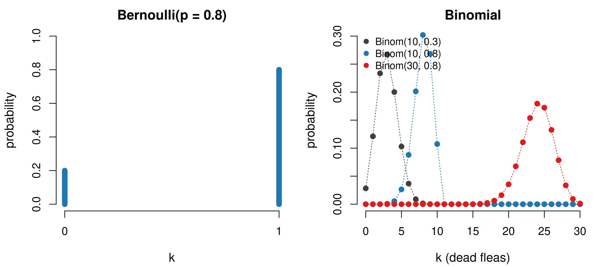
Bernoulli: one binary event (coin, survival, sex at birth), parameter p. Binomial: k successes in n such trials — 30 Daphnia in salt water, each dying with probability p. Mean np, variance np(1 − p), symmetric at p = 0.5, and Bernoulli is just Binom(n = 1).
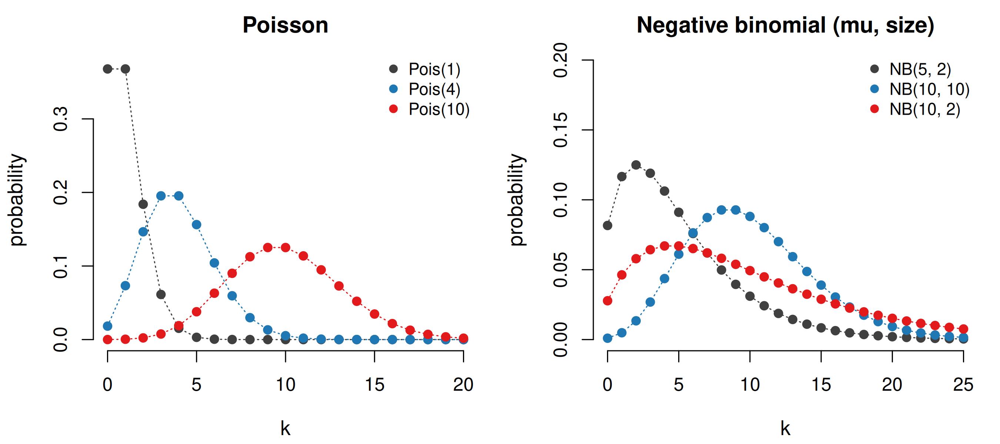
Poisson: counts (eggs per week), one parameter, variance = mean. When the variance exceeds the mean the data are overdispersed — then the negative binomial, with its extra dispersion parameter r, is the better model. As r → ∞ the negative binomial becomes the Poisson.
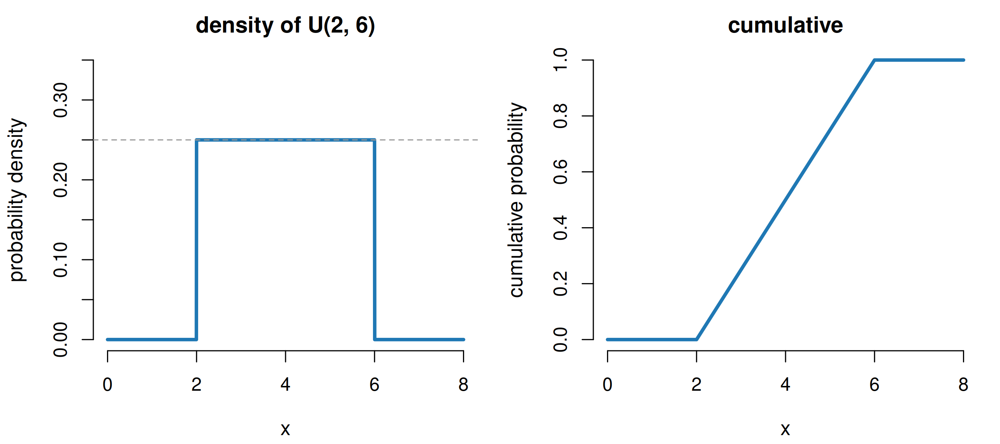
Two parameters a and b. The height must be 1/(b − a) = 0.25 so that the rectangle has area 1 — widen the interval and the curve drops. The cumulative function is a straight line, because probability accumulates at a constant rate. Trivial, probably non-existent in nature, but the workhorse of Bayesian priors and of simulation.
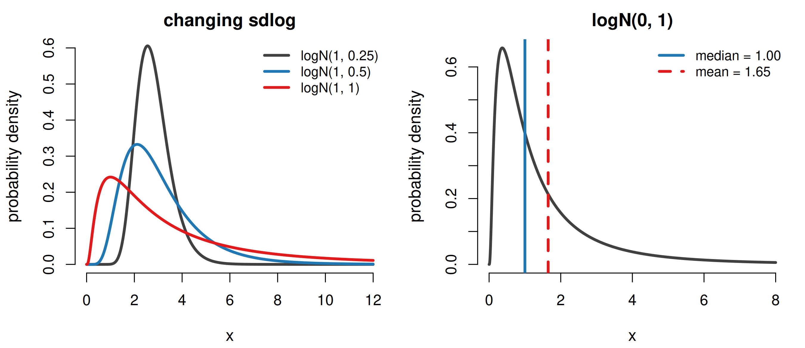
Continuous, strictly positive, right-skewed — natural for concentrations, body sizes and incomes, i.e. things that arise from multiplying rather than adding small effects. A frequent and expensive mistake is to report \(e^{\bar{x}}\) as the mean: that is the median. The long right tail drags the mean up to 1.65 — the variance co-determines the mean.
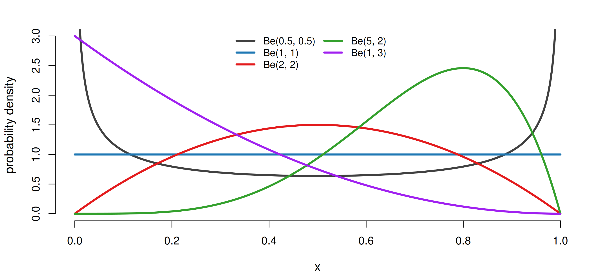
Two parameters produce U-shapes, flat lines, humps and skews alike — the natural model for proportions. Note Be(1, 1) is the standard uniform distribution.
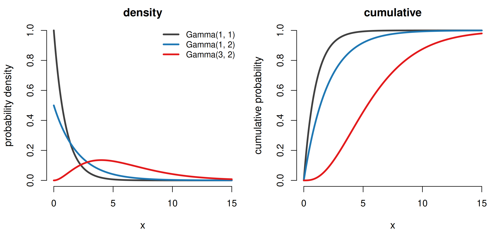
Continuous on [0, ∞), parameters shape k and scale \(\theta\); mean \(k\theta\). Used for waiting times (how long until a drug takes effect) and for leaf area lost to herbivores. With k = 1 it is the exponential distribution. Dormann calls it one of the “undervalued” distributions.
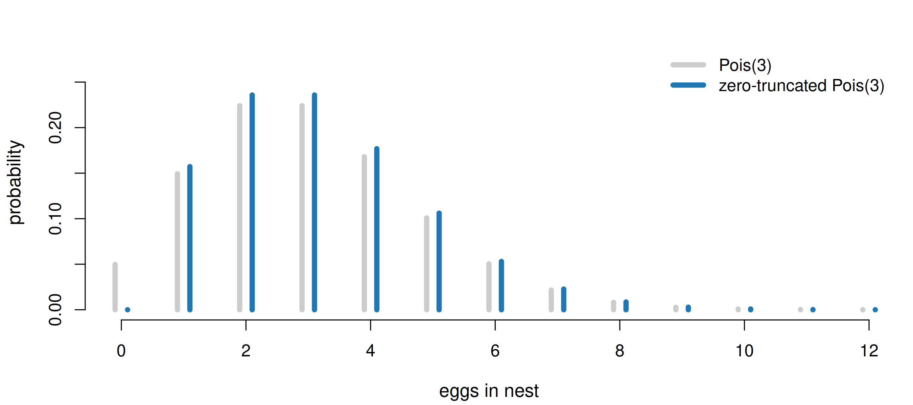
A blackbird never builds a nest and then lays zero eggs. Removing the impossible value leaves less than 1 of total probability, so the remaining bars are scaled up until they sum to 1 again. The same trick gives a truncated normal for strictly positive measurements.
| your data are… | try |
|---|---|
| a continuous measurement, symmetric | normal |
| a single yes/no outcome | Bernoulli |
| successes out of n trials | binomial |
| counts, variance ≈ mean | Poisson |
| counts, variance ≫ mean (overdispersed) | negative binomial |
| positive and right-skewed | log-normal or gamma |
| a proportion between 0 and 1 | beta |
| bounded, no preferred value | uniform |
| a count that can never be 0 | truncated Poisson |
Ask two questions first: discrete or continuous? and what is the domain? They eliminate most of Table 4.1 immediately.
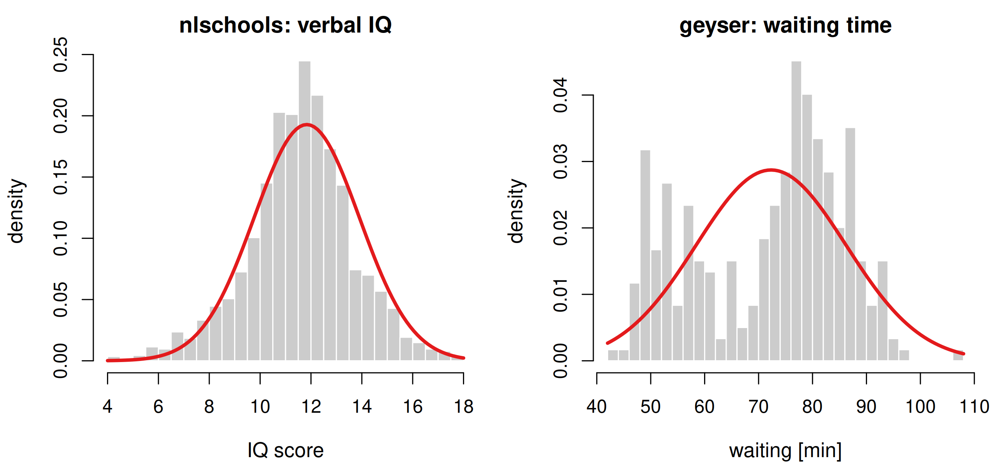
Left: the normal distribution fits well — mean and standard deviation are enough to summarise 2287 pupils. Right: it fits terribly. A bimodal sample needs a mixture, not one bell curve. Fitting is easy; checking the fit is the work.
| theoretical | observed | |
|---|---|---|
| P(IQ <= 10) | 0.188 | 0.187 |
| P(IQ >= 15) | 0.063 | 0.077 |
| 90% quantile | 14.485 | 14.500 |
The first two rows compare pnorm() with the observed proportion; the third compares qnorm() with the observed quantile. Close agreement here — but always check both the low tail and the high tail, and always look at the figure as well.
dbinom() reproduces pbinom()qnorm() and the staircase of qpois()integrate()cats$Bwt and judge whether it is satisfactoryTip
Everything you need is ?Distributions, curve(), plot(..., type = "h") and polygon().
d...() gives a height, p...() gives the probability.d, p, q, r. Table 4.1 and ?Distributions tell you which one to reach for; the help page tells you what its parameters are called.Tip
Dormann, C. F. (2020). Environmental Data Analysis: An Introduction with Examples in R, Chapters 3 and 4. Springer.